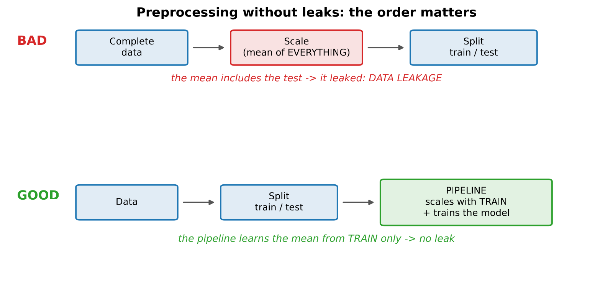
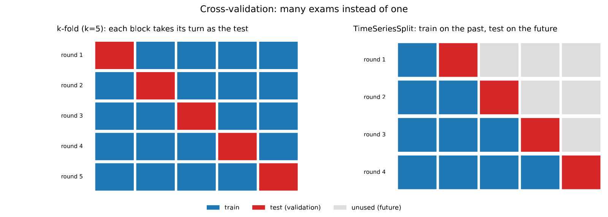
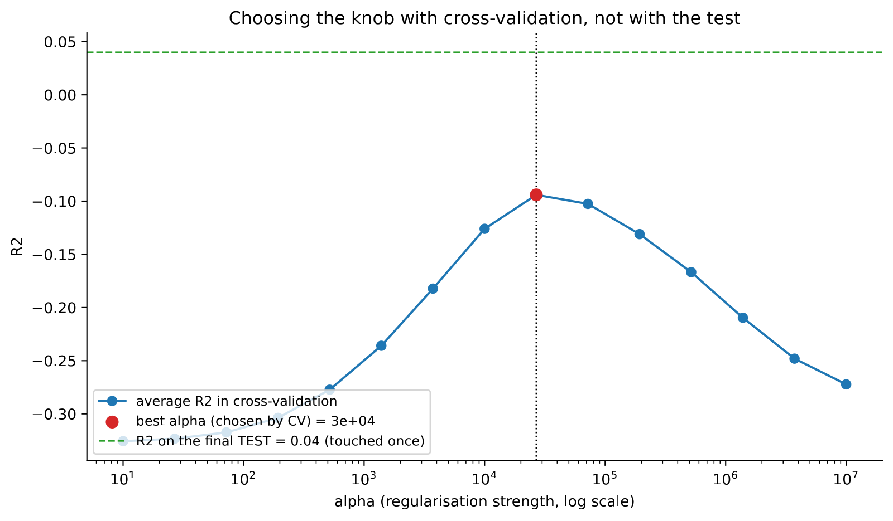

In 30 seconds
- R² −0.13 on average in temporal cross-validation. Negative: worse than always predicting the mean.
- The single cut of module 2 was luck. The five folds run from −0.011 to −0.271. With one alone you report whichever you happened to get.
- The honest alpha is 27,000, not 215,443. Chosen inside the training set, without looking at the test. And the test, touched once, gives 0.04.
- A pipeline is not tidiness, it is a defence. Scaling before splitting lets the future into the mean.
- The variation matters as much as the average. ±0.103 on an average of −0.126 means the figure alone says nothing.
What this module solves
The three previous modules measured with a single temporal cut: train up to July, test on August and September. A single exam.
Here we ask whether that exam was representative. The answer is no, and the correction hurts: the model goes from looking weak to being worse than having no model.
Preprocessing also gets put in order. Scaling, imputing and encoding have to happen inside the training set, never before splitting. A pipeline guarantees it by construction.
Before the theory: a toy example
A model evaluated on five different blocks of months. Each block is an exam.
| Block | R² |
|---|---|
| 1 | 0.00 |
| 2 | −0.20 |
| 3 | 0.00 |
| 4 | −0.20 |
| 5 | −0.10 |
Step 1. What happens if you only sit one exam
If the project had measured only block 1, it would report R² 0.00. A tie with having no model.
If it had measured block 2, it would report −0.20. Quite a bit worse than having no model.
It is the same model and the same data. The only thing that changes is which piece landed as the exam.
Step 2. The average of the five
average = (0.00 − 0.20 + 0.00 − 0.20 − 0.10) / 5
= −0.50 / 5
= −0.10Step 3. How much the result moves
Measured the same way as in module 1: each block's deviation from the average.
deviations: +0.10 −0.10 +0.10 −0.10 0.00
squares: 0.01 0.01 0.01 0.01 0.00 sum = 0.04
variance = 0.04 / 4 = 0.01
deviation = root of 0.01 = 0.10Average −0.10 with deviation 0.10. The result moves as much as it is worth. Reporting only the average hides that.
Step 4. And the other trap: scaling before splitting
Five training hours and two test hours, with the silica measured:
training (Mar to Jul): 3 3 5 7 7 mean = 5
test (August) : 10 14If the scaler is fitted with training only, the mean it uses is 5. The hour at 10 sits 2.5 deviations above, which is what it really was.
If the scaler is fitted with everything, the mean becomes 7:
mean with everything = (3 + 3 + 5 + 7 + 7 + 10 + 14) / 7 = 49 / 7 = 7With that mean, the hour at 10 looks far less extreme than it was. The scaler already knew August was going to rise. That is leakage through preprocessing, and nobody sees it skimming the code.
Step 5. What just happened
Two different ways of fooling yourself, both silent.
The first is measuring once and believing the number. The second is letting the preprocessing see data that would not exist in production. The rest of the module puts up a defence for each.
Glossary
11 terms, in plain words
- Cross-validation. Repeating the exam on different pieces of the data and averaging the results.
- Fold. Each of those pieces. In Spanish, pliegue.
- k-fold. Splitting into k pieces and using each one as the exam in turn. It works when the order of the rows does not matter.
- TimeSeriesSplit. The version for time series. It always trains with the past and examines with the immediate future.
- Pipeline. An object that chains preprocessing and model. When trained, each step learns only from the training set.
- Leakage through preprocessing. Computing means, scales or imputations using the test data too.
- Parameter. What the model learns by itself, such as the coefficients of a line.
- Hyperparameter. What you set before training, such as alpha or the maximum depth.
- Grid search. Trying every combination of a list of values. In Spanish, *búsqueda en rejilla*.
- Validation set. The piece used to choose the knobs. It is not the test set.
- Test set. The one touched a single time, at the end, to report.
Step by step
Step 1. Put the preprocessing inside the model
A pipeline chains scaler and model into a single object. When training is called, the scaler learns only from the training set. When predicting, it applies what it learned.
The defence is not remembering the right order. It is making the wrong order impossible.
Step 2. Choose the type of validation according to the data
With independent rows, k-fold shares out at random and that is fine. With a time series, it is not.
Sharing out hours at random puts the future into the training set. TimeSeriesSplit respects the order: each fold trains with the past and examines with what comes right after.
Step 3. Look at the five results, not only the average
An average with a lot of variation is an uninformative average. The folds are reported in full.
Step 4. Choose the knobs without touching the test
Grid search tries every value of alpha and scores it with cross-validation inside the training set. The test set takes no part.
Once there is a winner, it is trained on the whole training set and the test is touched once.
The code, in parts
Step 1. A pipeline in two lines
from sklearn.pipeline import make_pipeline
from sklearn.preprocessing import StandardScaler
from sklearn.linear_model import Ridge
modelo = make_pipeline(StandardScaler(), Ridge(alpha=1e4))
modelo.fit(X_train, y_train)line by line, 3 entries
make_pipeline(a, b)- Chains steps. The output of one goes into the next.
modelo.fit(...)- Trains the whole pipeline. The scaler learns mean and deviation only in here.
modelo.predict(...)- Applies the scaling already learned and then the model. No repeated code and no way to get the order wrong.
Figure: fig_m4_pipeline.pdf
Step 2. Cross-validation that respects time
from sklearn.model_selection import TimeSeriesSplit, cross_val_score
cv = TimeSeriesSplit(n_splits=5)
scores = cross_val_score(modelo, X_train, y_train, cv=cv, scoring="r2")
print("R2 por fold:", scores.round(3))
print(f"Promedio: {scores.mean():.3f} +/- {scores.std():.3f}")line by line, 4 entries
TimeSeriesSplit(n_splits=5)- Five folds in order. The first trains with little and the following ones accumulate past.
cross_val_score(...)- Trains and evaluates once per fold, and returns the five results.
scoring="r2"- Which metric to score with. RMSE or others can be requested.
scores.std()- The deviation of the five results. It is the important half of the report.
R2 por fold (TimeSeriesSplit): [np.float64(-0.011), np.float64(-0.211), np.float64(-0.271), np.float64(-0.021), np.float64(-0.116)]
Promedio: -0.126 +/- 0.103
All five results are negative. The best is −0.011 and the worst −0.271, twenty-five times lower.
Step 3. Choose alpha without looking at the test
from sklearn.model_selection import GridSearchCV
import numpy as np
rejilla = {"ridge__alpha": np.logspace(2, 7, 20)}
busqueda = GridSearchCV(modelo, rejilla, cv=TimeSeriesSplit(n_splits=5), scoring="r2")
busqueda.fit(X_train, y_train)
print(f"mejor alpha: {busqueda.best_params_['ridge__alpha']:.1e}")
print(f"mejor R2 CV: {busqueda.best_score_:.3f}")line by line, 4 entries
{"ridge__alpha": ...}- The double underscore points at a step of the pipeline: the
alphaknob of the step calledridge. np.logspace(2, 7, 20)- Twenty values spread on a logarithmic scale, from 100 to 10 million.
GridSearchCV- Tries every value with cross-validation and keeps the best. The test never comes in.
.best_score_- The winner's score in cross-validation, not on the test.
mejor alpha: 2.7e+04 | mejor R2 CV: -0.094 | R2 test final: 0.04
Figure: fig_m4_tuning.pdf
The result, measured
What we expected. That cross-validation would confirm the 0.04 of module 2, with some variation between folds. That is normal when there are half a million rows.
What came out. All five folds negative and an average of −0.126.
| Measurement | R² |
|---|---|
| Single cut, module 2 | +0.04 |
| Single cut with alpha chosen by looking at the test, module 3 | +0.061 |
| Temporal cross-validation, five folds | −0.126 ± 0.103 |
| Alpha chosen honestly, test touched once | +0.04 |
What it means. The single cut was not representative. Training up to July and examining August turned out to be one of the most benign combinations possible.
A negative R² means something concrete: the model predicts worse than always saying the training mean. In three of the five folds that is clearly what happens.
Why the folds come out so different
The first fold trains with March and examines April, and gives −0.011. The third drops to −0.271.
That spread is not sampling noise. It is the plant changing. Module 9 finds the cause with unsupervised learning: one of the three operating regimes recedes in April and disappears in May.
The correction to module 3
The alpha of 215,443 had been chosen by looking at the test. Repeated with grid search inside the training set, the winner is 27,000, eight times smaller.
With that honest alpha, the test touched a single time gives 0.04. The 0.061 of module 3 was optimistic, and the difference is exactly what the cheat cost.
What this module leaves open
With honest validation, no model in the project beats predicting the mean. The ceiling is not only low: on average it is negative.
Two paths remain. The first is to accept there is no signal. The second is to suspect the variables: perhaps the process has memory and no column captures it. Module 5 tries that second path, and the number rises a lot.
Watch out
- A single cut is a lottery. Here the project's cut gave +0.04 and the honest average is −0.126. There was no bad faith, there was a single exam.
- Reporting the average without the variation misleads. −0.126 ± 0.103 and −0.126 ± 0.005 are completely different results.
- Random k-fold on time series is leakage. It shares adjacent hours between training and test.
TimeSeriesSplithas to be used. - A scaler fitted with all the data has already seen the future. The pipeline prevents it by construction, which is why it is always used.
- Choosing knobs with the test burns it. It stops being an independent measure as soon as it takes part in a decision.
- A negative R² is not a code error. It means the model does worse than the mean.
Metallurgical bridge
Cross-validation is repeating the test across different campaigns. A flotation test on a single sample gives one number. Repeating it on samples from five different campaigns gives five numbers, and their spread says whether the result holds.
A metallurgist who reports a recovery from a single test, without replication, does not have a result. He has an anecdote. Module 2 had an anecdote.
The pipeline is the sample preparation protocol. The order of splitting, drying and pulverising is written down and followed the same way every time, so that two laboratories give the same answer. It also prevents the equivalent of leakage: homogenising the control sample together with the test samples contaminates the control and ruins the comparison.
And the alpha chosen with validation is calibrating the analyser with standards and verifying it with a sample that was not used to calibrate. Verifying with the same standards as the calibration always comes out fine, and proves nothing.
Review
Module 2 measured +0.04 and cross-validation gives −0.126. Which is the right one?
The cross-validation one, because it averages five exams instead of one.
The single cut of module 2 trained with March to July and examined August and September. It turned out to be a benign combination. Repeating the exercise on five different time spans, all five come out negative, between −0.011 and −0.271. The honest reading is that this model, on average, predicts worse than always saying the training mean.
What exactly does a negative R² mean?
That the model does worse than the minimum rival.
R² is built by comparing the model's error with the error of always predicting the training mean. An R² of zero means a tie with that mean. Positive means better. Negative means the model introduces more error than it removes. In this project it happens when the model learned the patterns of some months and the plant is already operating in another way.
Why is random k-fold no good here?
Because it shares adjacent hours between training and test, and adjacent hours resemble each other enormously.
The model then does not predict the future: it recognises an hour almost identical to one it has already seen. It is the same leakage module 1 explained, now slipped in through the door of validation. TimeSeriesSplit avoids it because each fold trains only with the past and examines with the immediate future, just as it would happen in the plant.
Why a pipeline and not scaling by hand before splitting?
Because scaling before splitting computes the mean with data that do not yet exist in production.
In the module's example, the training mean is 5 and the mean with everything is 7. With the wrong mean, an extreme August hour looks normal, and the model trains on a version of the past that already knew the future. The pipeline makes that mistake impossible: each step learns inside the training set and is then applied.
The spread between folds is ±0.103. What should be investigated?
That the data are not homogeneous over time. A spread that large is not sampling noise.
The folds run in chronological order, so the difference between them points to a change in the process. The right investigation is to look for that change instead of averaging it away. In this project module 9 finds it with k-means: there are three operating regimes and one of them disappears in May. That explains why a model trained with March and April performs badly afterwards.